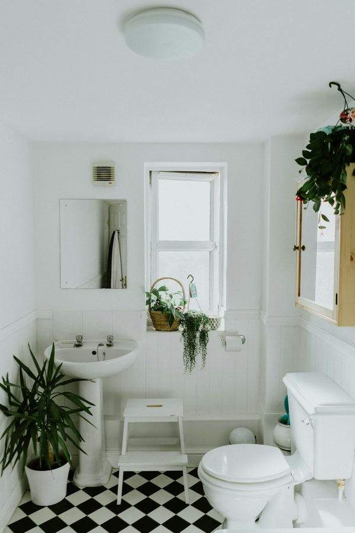

2026년 5월, 한국 상업용 빌딩 시장은 두 얼굴을 가지고 있다. 한쪽에서는 거래가 거의 멈췄고, 다른 한쪽에서는 강남·여의도·판교 등 핵심 입지로 자본이 빠르게 몰린다. 고금리 장기화가 만든 이 양극화는 단순한 시장 변동이 아니다. 한국 도시 공간에 자본이 어떻게 흘러가는가를 보여주는 구조적 신호다.
거래는 멈추고, 자본은 한 곳으로
고금리 장기화는 두 가지 결과를 동시에 만든다. 첫째, 자금 조달 비용이 높아져 부동산 거래 자체가 줄어든다. 5월 첫째 주 보도에 따르면 전체 상업용 빌딩 거래는 큰 폭으로 감소했다. 둘째, 그러나 시장에 남은 자본은 더 안전한 곳을 찾는다. 그 결과 자본의 흐름이 강남, 여의도, 판교 같은 핵심 입지로 더욱 집중된다. 거래가 줄어들수록 핵심 입지의 비중이 더 커지는 역설이 펼쳐지는 것이다.

이런 흐름은 한국에만 있는 현상이 아니다. 미국·유럽의 상업용 부동산 시장도 비슷한 양극화를 보이고 있다. 그러나 한국의 경우 핵심 입지 집중도가 더 높다. 서울이라는 단일 도시 안에서도 강남구, 영등포구 일부, 그리고 판교의 일부 블록으로 거래가 극단적으로 집중되는 구조다. 핵심 입지 외 지역에서는 매물이 6개월, 1년이 지나도 매도 호가가 떨어지지 않은 채 거래가 멈춰 있다.
입지가 곧 자산의 등급이 되는 시대
이런 양극화는 자산 보유자의 의사결정 구조를 바꾼다. 같은 1,000억 원 빌딩이라도 강남에 있으면 매각할 수 있고, 비핵심 입지에 있으면 매각이 거의 불가능하다. 그러므로 자산가들은 점점 더 핵심 입지 자산만 매입하려 하고, 비핵심 자산은 더 빠르게 헐값에 처분하려 한다. 이 행동 패턴이 누적되면 양극화는 더욱 강화된다 — 강남은 더 비싸지고, 비핵심은 더 싸진다.
"같은 1,000억 빌딩이 강남에 있으면 매각 가능 자산이고, 비핵심에 있으면 사실상 묶인 자산이 된다. 입지가 자산의 등급을 결정한다."
현장 시각에서 보면 이 양극화는 더 미묘하다. 강남 안에서도 테헤란로 북쪽과 남쪽이 다르고, 강남대로변과 이면도로가 다르다. '강남'이라는 한 단어로 묶이는 영역 안에서도 다시 양극화가 펼쳐진다. 부동산 중개사들의 표현을 빌리자면, "지금 잘 팔리는 곳은 강남에서도 약 30% 정도다." 즉 자본은 입지 안의 입지를 찾는 중이다.
도시 양극화의 사회적 의미
상업용 빌딩 거래의 양극화는 도시의 양극화로 이어진다. 핵심 입지의 자본 집중은 그 지역의 임대료 상승, 입주 업종의 단일화(고매출 업종 위주), 그리고 그 외 지역의 공실률 상승으로 연결된다. 비핵심 입지의 1층 상가가 비어가면 그 거리는 점점 활기를 잃고, 활기를 잃은 거리에는 새로운 임차인이 들어오지 않는 악순환이 시작된다.
이 흐름이 장기간 지속되면 한국 도시는 강남·여의도·판교로 대표되는 '자본 도시'와 그 외 '잔류 도시'로 분화될 수 있다. 도시 정책이 이 흐름을 방치하면 결과는 자명하다 — 한국 도시 풍경은 점점 더 양극화되고, 그 사이의 중간 입지는 사라진다. 동시에 핵심 입지에서는 임대료 부담을 견디지 못한 작은 가게들이 떠나고, 그 자리에 글로벌 체인이나 대형 자본만 남는다.
그렇다면 무엇을 봐야 하는가
건축·자재 산업 입장에서 이 양극화는 두 갈래의 시장을 만든다. 첫째, 핵심 입지에서는 프리미엄·럭셔리 자재 시장이 더 강해진다. 임대료가 높을수록 인테리어 투자도 커지기 때문이다. 둘째, 비핵심 입지에서는 가성비 자재와 그린 리모델링 시장이 새로운 기회가 된다. 정부 지원금과 결합한 리모델링 수요가 거래 절벽 시기에 일부 거래를 대신하기 때문이다.
편집장 코멘트
ARCHINODE 입장에서 이 양극화는 시장 진입 전략을 두 갈래로 나누어야 한다는 신호다. 글로벌 럭셔리 자재 브랜드는 강남·여의도·판교를 첫 진입 거점으로 삼는 것이 자연스럽다. 한편 그린 리모델링 자재나 정부 인증을 활용한 보급형 자재는 오히려 비핵심 입지에서 더 큰 시장을 만들 수 있다. 시장이 둘로 갈라지면 전략도 둘이 되어야 한다 — 하나의 한국 시장이 아니라, 두 개의 한국 시장으로 본다는 발상의 전환이 필요한 시점이다.